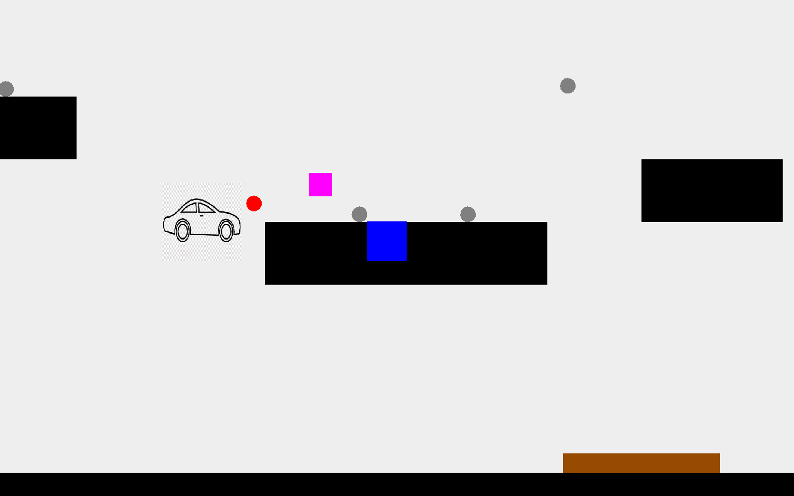

Hangman
The classic game of hangman. Using pythons drawing functions and filereaders I was able to recreate the game of hangman.

The classic game of hangman. Using pythons drawing functions and filereaders I was able to recreate the game of hangman.
The early game of Jetpac redone to have a Rose-Hulman theme, where the player would fight enimes while trying to build a bonfire. Created using Java and Java Graphics.
